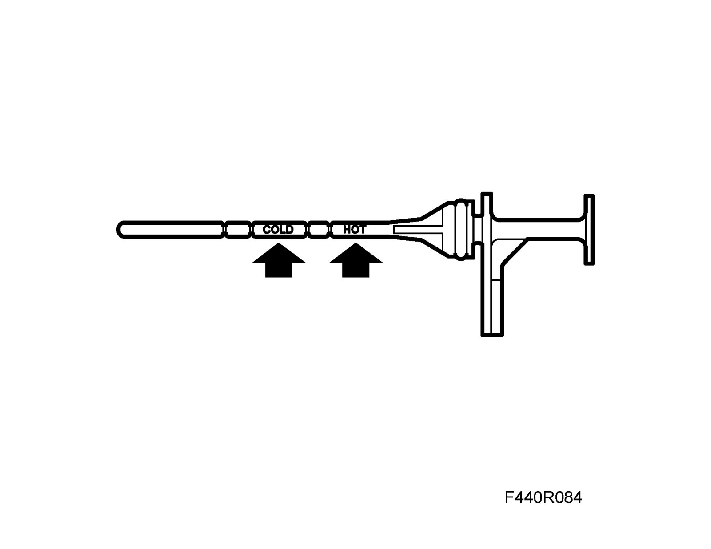

Checking the Transmission Fluid Level
Checking the transmission fluid levelCheck
1. Place the car on a lift as level as possible. Chock the wheels if a track lift is being used.
2. Apply the handbrake, engage P and start the engine. Raise the car and check the fluid level. If necessary, top up with fluid to dipstick level "cold". Lower the car.

Important
In order to correctly read the oil level, the O-ring must be removed from the dipstick and refitted after reading.
3. Connect Tech 2. Run the engine until the temperature reaches 80°C in menu "Read values" TCM.
4. Check the fluid level and top up as necessary. The difference between max and min marks is 0.3 liters.
Topping up
1. Place the car on a lift. Engage P and apply the handbrake. Chock the wheels if a track lift is being used.
2. Remove the dipstick and lower the car.
3. Connect a hose with 87 92 822 Oil filler funnel to the dipstick hole.
4. Fill with automatic transmission fluid as specified, wee Weight, fluid capacity and grade of fluid.
Important
Fill up with oil through the oil filler hole. Do not remove any other plugs from the top of the gearcase.
5. Raise the car, remove the hoses and put back the dipstick. Lower the car.